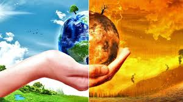

CALENTAMIENTO GLOBAL

AUMENTO DE LOS GASES DEL EFECTO INVERNADERO: La excesiva actividad industrial que se ha registrado en el mundo a partir de la Revolución Industrial es la principal causa del calentamiento global.
QUEMA DE COMBUSTIBLES FOSILES:Una buena parte de los gases de efecto invernadero se generan tras la quema de combustibles fósiles, es decir, todos aquellos que se derivan de productos como el carbón, el petróleo y el gas natural. Esto lo observamos, por ejemplo, en los grandes centros urbanos con la quema masiva de combustibles por los coches y otros medios de transporte pesado.
DEFORESTACION DE SELVAS Y BOSQUES: Se suele pensar que la deforestación de selvas y bosques solo genera efectos en los entornos más cercanos. Sin embargo, el daño que se genera es global. Los árboles tienen la facultad de convertir el CO2 en oxígeno a través del proceso de la fotosíntesis, con lo cual contribuyen a reducir la contaminación del aire.